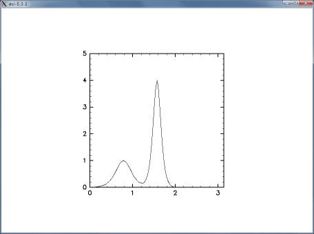

Basic how to use as a scripting language of Ruby is introduced first here. Data of introduction of a package and a earth science necessary to the several more calculating value and arrangement calculation is read and written, and it follows introduction of a visualized way. Fluid numerical value calculation is being also done at the last way.
1. Basic how to use Ruby
2. Arrangement is calculated using NArray.
3. A picture is drawn in Ruby-DCL.
4. Reading and writing of a character data
5. The reading and writing which is data in Ruby-NetCDF
6. Fluid numerical value calculation.
Ruby is a scripting language like Perl and a shell script. When the file in which a script was written is made and Ruby is called, the contents are carried out. First it's the contents by an editor.
print ("Hello, World\n")
A written file is made and it's preserved by the name as test1.rb. And.
% ruby test1.rb
When the command is carried out (The % is the character a prompt and blue bold face input actually.)
Hello, World
It's indicated. A script says "A table indicate the part bound up with "" (= character string).", doesn't it? "\n" shows a new paragraph.
Japanese can also be used. It's written on the head with #! /usr/bin/env ruby, in chmod + x, it's possible to carry out, when doing, I finish in % ./test1.rb.
% chmod +x test2.rb % cat test2.rb #!/usr/bin/env ruby print("hello, the world \n") % ./test2.rb Hello, the world
Even if a file isn't edited by an editor, it's possible to carry out by in-line. -e option is used.
% ruby -e 'print("Hello, World\n")'
Hello, World
ruby of an interactive as irb is also prepared. irb (main): A prompt such as 001:0> shows, so when a script is described there, a result will be indicated immediately.
% irb irb(main):001:0> print("Hello, World\n") Hello, World # standard output nil # A return value is also indicated in irb irb(main):002:0> exit %
There is also something as irbsh as the execution environment on emacs (Special installation is needed and refer to the http://www.rubyist.net/~rubikitch/computer/irbsh/ vicinity.)
irbsh[16:19](main):001:0>print ("Hello, World\n") #irb if you start form line head
Hello, World
nil #also indicates a return value in standard output
<
[pwd:~]
irbsh[16:19](main):002:0>
irbsh[16:20](*SHELL*):003:0> ls # SHELL if you start with a space
~ $ ls
Choices Desktop Mail bin doc lib rpm tmp
DATA GNUstep Xrootenv.0 dennou install public_html src work
Basic how to use ruby will be seen using irb at below.
The type declaration is unnecessary for Ruby.
% irb. irb(main):001:0> a = 2 # Integer => 2 irb(main):002:0> b = 3.5 # The real number => 3.5 irb(main):003:0> c = "apple" # String => "apple"
" Even if a blank on both sides of the =" is put in, you don't need to put it in. An integer as 2, the real number as 3.5 and a character string as "apple" are possible to think these to have substituted for a variable as a, b, c, a name tag as a, b, c was put on the integer object as 2, the real number object as 3.5 and the character string object as "apple" actually, said, equivalent.
An object also has its style and size as well as price in various information by itself.
irb(main):004:0> a # value of the object => 2 irb(main)005:0> b.class # class of the object => Float irb(main)006:0> c.size # size of the object => 5 irb(main)007:0> 3.5.class # same as b.class => Float
Upper class and size are called the method. To an object, "Of the type, it's stating." "Of the size, it's a response.", etc. and a message will be sent. An object "is the real number" to that, "It's 5.", you answer etc..
Calculation will be also done of course. Please try it variously.
irb(main):008:0> d = a * (b**2 + 3.0e2) => 624.5 irb(main):009:0> e = c + "orange" => "appleorange" # as addition of a character string is just lined up in turn.
By the way, it's possible to operate more than one variable at once.
irb(main):010:0> e,f = a*b, e+"lemon"
=> [7.0, "appleorangelemon"]
When it's begun by a capital letter, it'll be the fixed number. When I try to rewrite the fixed number, a warning is issued.
irb(main):011:0> A = 3.1415927 => 3.1415927 irb(main):012:0> A = 1.7320508 (irb) :22: warning: already initialized constant A => 1.7320508
' The part bound up with-' will be also a character string, but here also deals with a control character as the character just as it is.
irb (main): 013:0> print 'apple\n'
apple\n=> nil # Without changing line, \n was shown
A style change uses the method such as to_s, to_i, to_f.
irb(main):101:0> g = b.to_s =>"3.5" # to_s convert to string irb(main):102:0> h = b.to_i => 3 # to_i convert to integer irb(main):103:0> a.to_f/3 - a/3 => 0.666666666666667 # to_f convert to real
An object is lined in turn, and, [ ], Eaten one is arrangement. It isn't necessary to be the same style in the arrangement.
irb(main):113:0> ary1 = [3, b, d-3.0, "orange"] => [3, 3.5, 621.5, "orange"] irb(main):114:0> ary1[0] => 3 # C and the factor which is the beginning similarly 0th irb(main):115:0> ary1[1..3] => [3.5, 621.5, "orange"] # from number 1 of to number 3 irb(main):116:0> ary1[-1] => "orange" # which counts the number of the negative from the rear irb(main)117:0> ary2 = [a, ary1] => [ [2, 3, 3.5, 621.5, "orange"]] # it's all right for arrangement to be in the arrangement. irb(main):118:0> ary2 [1][3] => "orange" # the 3rd element of ary2[1]
for, if, while, case can be used for control of a flow of a program. It can be used of course even in irb.
irb(main):121:0> for i in 1..5 irb(main):122:1> print(i,"\n") irb(main):123:1> end
The left number of ">" of a prompt shows the depth of the nest, and no nests are performed to 3 line eye which disappears.
irb(main):131:0> if (a==3) then # where you may have no then irb(main):132:1* print "Hello\n" # The in case of which isn't ambiguous omits a parenthesis, possible irb(main):133:1> else irb(main):134:1* print a,"\n" if a != 4 # The addition is also possible by if sentence, irb(main):135:1> end
There is also something as ITERETA to process in turn to each element of arrangement.
["dog","cat","bird"].each {|i|
printf ("a %s\n",i)
}
each {...} The method which takes (or, do ... end) for an argument. Each element of arrangement. |. It's stocked in a variable in| (here, i) and operation to the i is described. There is something a variety in ITERETA, and a loop can be described more directly. It's often more convenient than for is used.
(1..10).each{|i|
printf ("%02d\n",i)
}
10.times do # 10 times Repeat
print "hoge"
end
loop do # infinite loop
break if STDIN.gets=="\n"
end # which passes through a loop when inputting a blank
line
loop do
break if /^$/ =~ gets # the same as the above (/.../ is a regular expression)
end
Note: ITERETA (block) makes scope of a variable (the effective area). The following script will be an error.
(1..10) .each{|i|
b = i
}
b doesn't exist outside the b # {...}, so it'll be an error.
To avoid an error.
b = 0
(1..10) .each{|i|
b = i
}
b # 10
Be so, it's done.
A mathematical function uses a Math module.
a = Math::cos(0) # The function cos of Math module p = Math::PI
When include sentence is used, a part of "Math::" becomes unnecessary in after a while.
include Math a = cos(PI)
def is used to define the method.
def add(a,b,c) d = a+b+c return d # Designation of return value end e = add(3,4,6)
All objects belong to some classes.
Procedure to an
object (the method) shows the kind of objects with a class, and is
defined every class. For example "3.5" is an object in a class as
Float, in the Float class, +, -, *. /The method such as (arithmetic
operation) and abs, floor, to_i, to_s is defined. A module is the group
which gathered the function of the method and the fixed number, and
inclusion is done and it's used as the need arises.
The function will be expanded using a NArray class and something such as DCL modules and NetCDF ranges at a point from here. The way to make a class by oneself is introduced after it.
Arrangement equipped with standards in Ruby (Array) lined an object up in turn, and this is also 1 object. It isn't necessary to be the same style and an element of arrangement is the flexible one in which an optional object can be stocked as it matched an upper example, so its part calculation rate is sacrifice. So when we do numerical value calculation, a class package as NArray will be used.
It's written on a NArray method list about the method of NArray, so please refer to it suitably.
To use a NArray class, first.
require "narray"
It's done. A definition in a NArray class is read with this. Arrangement is generated newly (An object in a NArray class is generated newly it means that.), for, it's made NArray.new (" The type", the size and bigness...) But NArray where the usual is easier than that. The style (The size and bigness...) is used. For example to make single precision real number arrangement ary1 of 3x4.
ary1 = NArray.sfloat(3,4)
It's so. The price of the contents is all 0 only with this. Next I make the method which sets the contents act on this arrangement object.
ary2 = NArray.sfloat(6).fill!(3.0) # By arrangement of length 6, the contents are all 3.0 ary3 = NArray.sfloat(10).indgen! # set value incremented with 1
To change from usual arrangement (Array) to NArray.
ary4 = [2 or 3 or 4.5 or 8] # ordinal ruby array ary5 = NArray.to_na(ary4) # convert ary4 to NArray.
It's done. When the real number is also included in the inside by 1, for example all elements will be arrangement of the real number in NArray, and is the real number.
The first element number is 0 similarly, and the last element number is the number of elements - 1 with Array and a C language for an index. The order of the multidimensional index is same as Fortran, and a number is increased from the previous element.
ary6 = NArray.sfloat(4,3).indgen!(1.02.0) # The value which increased 2 from 1 is set. ary6[0,0] # the first element ary6[1,0] # next element ary6[1..2,0..-1] # slice part of the ary ary6[true,1] # true is the same as 0..-1 ary6[0..1,0] = 999 ary6
You calculate every element.
ary7 = NArray.sfloat(43).fill!(3.0) ary6 + ary7 ary6 * ary7 ary6 % ary7 ary7 - 1.5 ary6 ** 2
A score of a test in 20 classes in Mr. 笑介 is science.
65 80 67 35 58 60 72 75 68 92 36 50 2 58.5 46 42 78 62 84 70
English.
44 87 100 63 52 60 58 73 55 86 29 56 89 23 65 84 64 27 86 84
It was so. I ask an average mark, a standard deviation and the
deviation value about according to the subject and a total and score
high points, rearrange it in turn.
On the presumption that DCL (Fortran edition) has been used, this clause is doing. When having not used it, the one acquired from visualization using GPhys (GGraph or GAVE) may be easy to understand about visualization. When advancing in a GPhys tutorial when having knowledge to here in the class where the grid point data which is handled by the data form by which GPhys is NetCDF,GrADS,grib is treated, it's possible to do an analysis of data and visualization of such form. But, GGraph and GAVE use Ruby - DCL inside, and just as I'll establish it small, I still need knowledge of Ruby - DCL. Please read easy DCLvery much to acquire from one about Ruby-DCL
I'll draw a figure using Ruby - DCL first.
require "numru/dcl"
When O increases, it's possible to use an after DCL module. A subroutine of DCL.
NumRu::DCL::gropn(1)
When writing it, how does NA move like DCL of Fortran edition? But, at this rate it's long, so usually, NumRu, include.
include NumRuDCL::gropn(1) DCL::grfrmDCL::sgtxr (0.5,0.5,"abc") DCL::grcls
After a while will write a script and use the ruby command. NArray of single precision real number (sfloat) is given to arrangement.
Example: hop.rb
"#" The back is ignored by a comment more. The command as p (It outputs by the shape that the contents of an object are easy to read for man.) is used for the occasion using the script.
After an upper file is downloaded.
% ruby hop.rb
It'll be so and is as follows.
It isn't necessary to give it and the argument to which the length of the arrangement is handed is compared with DCL in 77th edition of Fortran. (Example : CALL USGRPH (N,X,Y) -> DCL::usgrph (x,y))
include DCL
When writing it, it's possible to omit a part of after DCL::.
Example : contour.rb
A part from "=begin" in a line head to "=end" will be also a comment. 21 lines of command line option is being checked by an eye and 34 line eye. ARGV is arrangement of a command line option.
% ruby contour.rb -color
When doing, a figure with the color like the bottom will be done. The numerical value is changed to a character string in to_s by 40 line eye, and it's outputting in a screen. Today's date also indicates that 42 lines of "date" class is used like an eye. # {...} also changes a result to a character string.
Make a graph of the frequency distribution of the score about a test result of the class in Mr. 笑介.
Rewrite a DCL drawing Fortran program of holdings in Ruby (When you can cry, a sample is rewritten.)
Ruby is a scripting language conscious of Perl, and the function of the string manipulation is strong. Using that, I'll read and write the data written on a text file.
1 radiosonde archive http://www.ncdc.noaa.gov/oa/cab/igra/ empty spot in NOAA is chosen as an example and radiosonde observational data is acquired. " When a link of ASCII Files" is being followed, a text file (the one made hard in zip) can be acquired. Tateno's (= Tsukuba) recent data is put here temporarily.
When the contents of the text file will be seen first.
% more 47646.y2d
# 4764620040101002330 67
21101100B 31 58B 59 250 10
10100000 123B 66B 90 0 0
20 98600 -9999 64B 100-9999-9999
30 95200 -9999 -9999 -9999 120 30
10 92500 759B 24B 80 210 20
30 91300 -9999 -9999 -9999 250 20
30 90000 -9999 -9999 -9999 260 51
30 87500 -9999 -9999 -999 285 108
10 85000 1435B -25B 80 280 118
:
20 770 -9999 -437A-9999-9999-9999
# 4764620040101069999 25
31101100B 31 -9999 -9999 140 15
30 93200 -9999 -9999 -9999 135 20
:
It is. To read this file in Ruby.
file1 = File.open("47646.y2d","r")
It's done. file1 will be an object in a File class which corresponds to this file (for "r", read only). To read 1 line from file1.
file1.gets
It's done. When gets is repeated, the line of the following is continued and read. To return to the head of the file.
file1.rewind
It's done. When readme.txt is seen, data of the style and the temperature seems to include the line with the "#" in the line besides the header and that in a line head. So if the read line is header, a date is read and page feed is done, and if it's data, makes sure that the plot will make the temperature the height.
Example : rsread.rb
Please see here and here about a regular expression. The beginning seems complex and is confused, from remembered one, gradually, it should be used. "\ d" but a number and {5} are "5 time repeat". (), One which agrees with an eaten part enters $1 $2 ... in turn from the front, so it's possible to substitute that for a variable at the just after line.
Only a specific variable in specific years will be taken out from an upper file. The method such as puts, print or printf is used for extraction of a text file. puts extracts a line of argument as a minute, so a new paragraph enters certainly at the end. A new paragraph is also controlled by itself at print and printf.
Example : rsrw.rb
The method of much is prepared about a text manipulation, connection (+), division (split), comparison (<=> and <,<=,>,=>,==), substitution (sub,gsub) and part taking, (, [ ],),* Change (upcase,downcase) etc. of uppercase and lowercase letters is enriched, so when using these, it can be processed freely variously. You should refer to a manual for more information.
When a netcdf library is used, it's possible to read and write a NetCDF file. I'll read a NetCDF file in irb in the beginning. I have here for a NetCDF file of a sample (the distribution of the temperature of 1 monthly average).
require "numru/netcdf"
include NumRu
file1 = NetCDF.open("T.jan.nc") # open file and create NetCDF object
var_temp = file1.var("T") # open variable
temp = var_temp.get # get values of variable
p temp # show the values
p temp[0..4,10,true] # show the part of values
file1 is an object which corresponds to 1 NetCDF file, and var_temp is an object which corresponds to 1 variable in file. The price is being taken out from var_temp using the get method. (Because it's the ordinary name, file1, var_temp, temp may use the favorite name.) minimum, it's possible to read by only this procedure. When I make the contents indicate, I find out that it's read as NArray.
It was read as NArray by an upper procedure, so it's possible to draw this using Ruby - DCL.
Example : ncread.rb
A layer of plan is being drawn from the bottom by this example. This example is the specific way to fill out dependent on the structure of the NetCDF file for easiness, but when giving the form that I inquire of an object a necessary matter, the thing which is being expanded can make sure easily relatively that it can also correspond to a different file. It's GPhys to treat 1 variable of a NetCDF file (), a variable name which accompanies that and axis information as 1 object together.
When carrying out which height to get, I'll can choose.
As years can be changed, when there are no files, I'll get by a ftp.
Do a test result of the class in Mr. 笑介 in NetCDF.
Eastern and western average east and west style of the monthly average is made a NetCDF file.
A NetCDF class will be expanded for itself to read NetCDF like an upper practice problem, do some analysis processing and do the thing such as extracting in NetCDF. A NetCDF file is read first and that's extracted in a NetCDF file just as it is.
Example : nccopy.rb
ITERETA such as each_dim, each_var, each_att is being used. When it isn't accustomed to ITERETA, it's slightly complex, but it becomes multi-purposed.
It's changed to the method everything is copied except for a designated variable.
Using this, eastern and western average east and west style of the monthly average is made a NetCDF file.
When increasing such script one after another, data analysis/analyses can be done now easily. When advancing towards the pin grid array format with the how to use volume I advanced a little and a coordinate by which the lost value is handled and a grads file is read in the GPhys tutorial when class "GPhys" of scatter-ized physical quantity is handled, you'd be able to do higher how to use now.
The numerical value calculation which was being done in Fortran can also be written more easily in Ruby. The following example calculated the state to which chaotic advection happens by Besnard convection. Fluid does a complicated movement at the flowfield where all simple periodic fluctuation is done.
Example : benard.rb
An upper example used the algorithm written in Fortran just as it is and rewrote in Ruby, but I'll do that I made a class this time and resembled. The next example is a numerical value calculation experiment of a soliton. I make a class newly and name Field. A coordinate system is defined by initialize, defaults are established and a definition of spatial differentiation, a KdV equation and the method of the time integration are made.
Example : kdv.rb

I change an early stage corrugation variously and experiment. The method to which a corrugation is given is defined newly in the Field class, and makes sure that it'll be changed from outside.

Copyright (C) 2003-2006 GFD Dennou Club. All Rights Reserved.